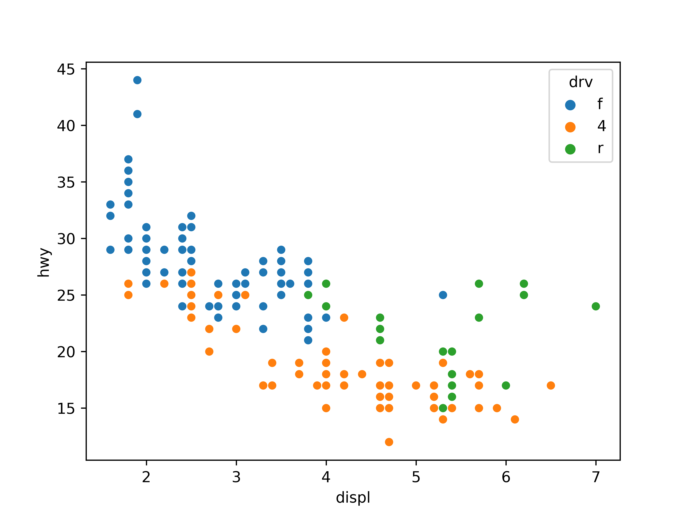
Do it! 쉽게 배우는 파이썬 데이터 분석
08 그래프 만들기
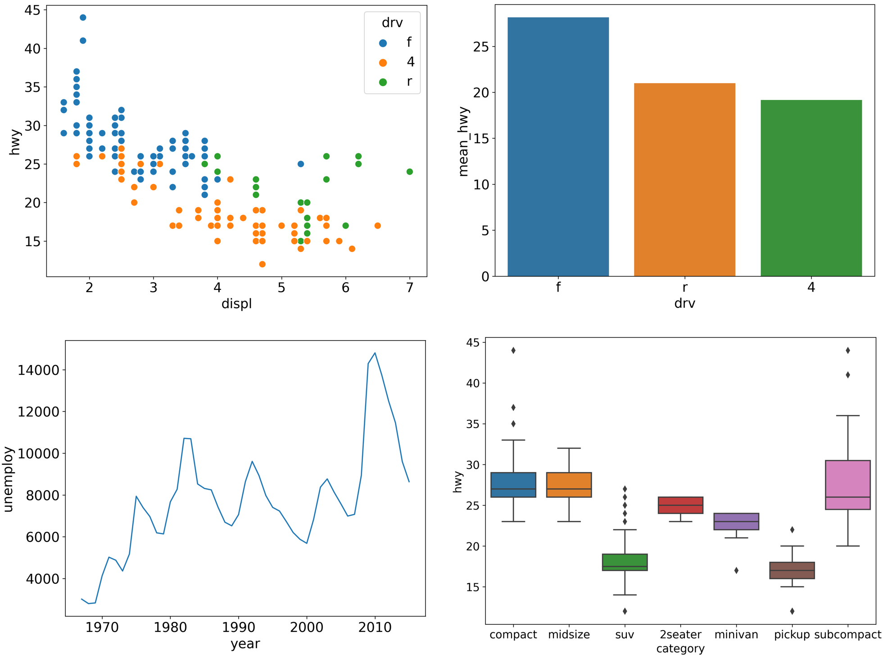
목차
08-1 파이썬으로 만들 수 있는 그래프 살펴보기(link)
08-2 산점도 - 변수 간 관계 표현하기(link)
08-3 막대 그래프 - 집단 간 차이 표현하기(link)
08-4 그래프 - 시간에 따라 달라지는 데이터 표현하기(link)
08-5 상자 그림 - 집단 간 분포 차이 표현하기(link)
08-1 파이썬으로 만들 수 있는 그래프 살펴보기
그래프(graph): 데이터를 보기 쉽게 그림으로 표현한 것
- 추세와 경향성이 드러나 데이터의 특징을 쉽게 이해할 수 있다
- 새로운 패턴 발견, 데이터의 특징을 잘 전달
- 다양한 그래프
- 2차원 그래프, 3차원 그래프
- 지도 그래프
- 네트워크 그래프
- 모션 차트
- 인터랙티브 그래프
seaborn 패키지
- 그래프를 만들 때 자주 사용되는 패키지
- 코드가 쉽고 간결함
08-2 산점도
- 변수 간 관계 표현하기
산점도(scatter plot)
- 데이터를 x축과 y축에 점으로 표현한 그래프
- 나이와 소득처럼 연속값으로 된 두 변수의 관계를 표현할 때 사용
산점도 만들기
축 범위 설정하기

축 범위 설정하기
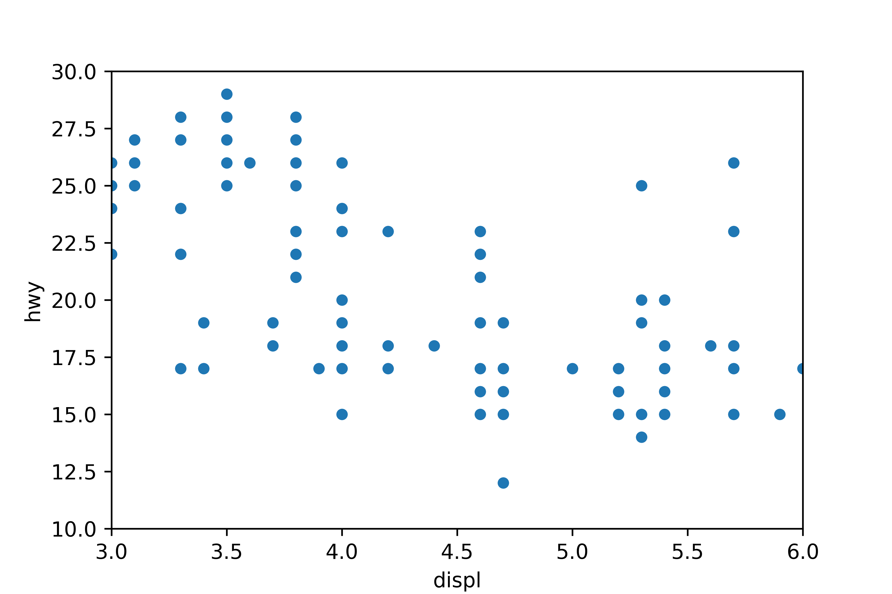
종류별로 표식 색깔 바꾸기
그래프 활용하기
그래프 설정 바꾸기
import matplotlib.pyplot as plt
plt.rcParams.update({'figure.dpi' : '150'}) # 해상도, 기본값 72
plt.rcParams.update({'figure.figsize' : [8, 6]}) # 그림 크기, 기본값 [6, 4]
plt.rcParams.update({'font.size' : '15'}) # 글자 크기, 기본값 10
plt.rcParams.update({'font.family' : 'Malgun Gothic'}) # 폰트, 기본값 sans-serif
# 여러 요소를 한 번에 설정하기
plt.rcParams.update({'figure.dpi' : '150',
'figure.figsize' : [8, 6],
'font.size' : '15',
'font.family' : 'Malgun Gothic'})
# 모든 설정 되돌리기
plt.rcdefaults()설명 메시지 숨기기 - 코드 뒤에 ; 삽입
혼자서 해보기
mpg 데이터와 midwest 데이터를 이용해 분석 문제를 해결해 보세요.
Q1. mpg 데이터의 cty(도시 연비)와 hwy(고속도로 연비) 간에 어떤 관계가 있는지 알아보려고
합니다. x축은 cty, y축은 hwy로 된 산점도를 만들어 보세요.
Q2. 미국의 지역별 인구통계 정보를 담은 midwest.csv를 이용해 전체 인구와 아시아인 인구 간에
어떤 관계가 있는지 알아보려고 합니다.
•x축은 poptotal(전체 인구), y축은 popasian(아시아인 인구)으로 된 산점도를 만들어 보세요. •전체 인구는 50만 명 이하, 아시아인 인구는 1만 명 이하인 지역만 산점도에 표시되게 설정하세요.
Q1. mpg 데이터의 cty(도시 연비)와 hwy(고속도로 연비) 간에 어떤 관계가 있는지 알아보려고
합니다. x축은 cty, y축은 hwy로 된 산점도를 만들어 보세요.
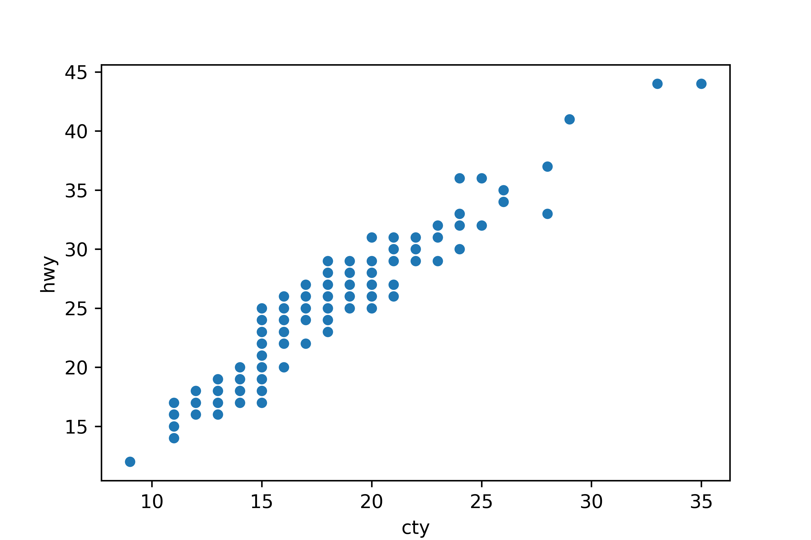
Q2. 미국의 지역별 인구통계 정보를 담은 midwest.csv를 이용해 전체 인구와 아시아인 인구 간에
어떤 관계가 있는지 알아보려고 합니다.
•x축은 poptotal(전체 인구), y축은 popasian(아시아인 인구)으로 된 산점도를 만들어 보세요. •전체 인구는 50만 명 이하, 아시아인 인구는 1만 명 이하인 지역만 산점도에 표시되게 설정하세요.
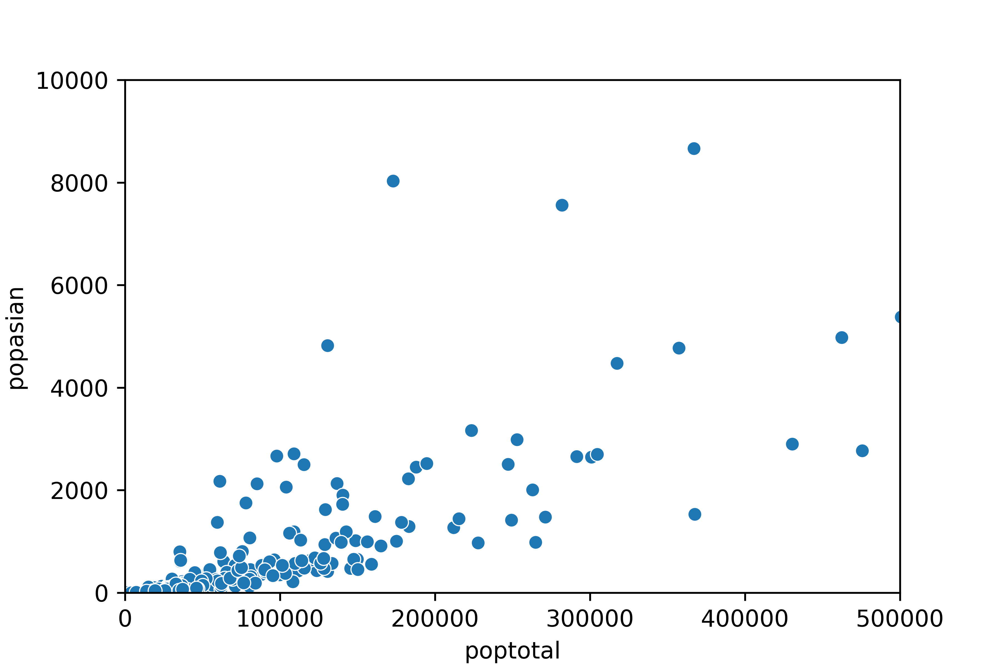
08-3 막대 그래프
- 집단 간 차이 표현하기
막대 그래프(bar chart)
- 데이터의 크기를 막대의 길이로 표현한 그래프
- 성별 소득 차이처럼 집단 간 차이를 표현할 때 사용

평균 막대 그래프 만들기
1. 집단별 평균표 만들기
as_index = False: 변수를 인덱스로 바꾸지 않고 원래대로 유지
- 앞 코드의 출력 결과를 보면 집단을 나타낸 변수
drv가 인덱스로 바뀌어mean_hwy보다 아래에 표시됨 seaborn으로 그래프를 만들려면 값이 변수에 담겨 있어야 함
2. 그래프 만들기
3. 크기순으로 정렬하기
빈도 막대 그래프 만들기
- 빈도 막대 그래프: 값의 빈도(개수)를 막대 길이로 표현한 그래프
- 여러 집단의 빈도를 비교할 때 사용
1. 집단별 빈도표 만들기
2. 그래프 만들기
sns.countplot()으로 빈도 막대 그래프 만들기
- 집단별 빈도표 만드는 작업 생략하고 원자료를 이용해 곧바로 빈도 막대 그래프 만듦
sns.barplot()와 sns.countplot() x축 순서가 다른 이유
mpg의drv:f,4,r순- 데이터 프레임에서 변수의 값 순서는 데이터 프레임에 입력된 행 순서를 따름
mpg의 0~6행f, 7~17행4, 18~27r
df_mpg의drv: 알파벳순groupby()로 데이터 프레임을 요약하면 값의 순서가 알파벳순으로 바뀜
막대 정렬하기
빈도 높은 순으로 정렬하기
Index(['f', '4', 'r'], dtype='object', name='drv')혼자서 해보기
mpg 데이터를 이용해 분석 문제를 해결해 보세요.
Q1. 어떤 회사에서 생산한 'suv' 차종의 도시 연비가 높은지 알아보려고 합니다. 'suv' 차종을
대상으로 cty(도시 연비) 평균이 가장 높은 회사 다섯 곳을 막대 그래프로 표현해 보세요.
막대는 연비가 높은 순으로 정렬하세요.
Q2. 자동차 중에 어떤 category(자동차 종류)가 많은지 알아보려고 합니다. sns.barplot()을
이용해 자동차 종류별 빈도를 표현한 막대 그래프를 만들어 보세요. 막대는 빈도가 높은 순으로
정렬하세요.
Q1. 어떤 회사에서 생산한 'suv' 차종의 도시 연비가 높은지 알아보려고 합니다. 'suv' 차종을
대상으로 cty(도시 연비) 평균이 가장 높은 회사 다섯 곳을 막대 그래프로 표현해 보세요.
막대는 연비가 높은 순으로 정렬하세요.
manufacturer mean_cty
8 subaru 18.833333
9 toyota 14.375000
7 nissan 13.750000
3 jeep 13.500000
6 mercury 13.250000Q1. 어떤 회사에서 생산한 'suv' 차종의 도시 연비가 높은지 알아보려고 합니다. 'suv' 차종을
대상으로 cty(도시 연비) 평균이 가장 높은 회사 다섯 곳을 막대 그래프로 표현해 보세요.
막대는 연비가 높은 순으로 정렬하세요.
Q2. 자동차 중에 어떤 category(자동차 종류)가 많은지 알아보려고 합니다. sns.barplot()을
이용해 자동차 종류별 빈도를 표현한 막대 그래프를 만들어 보세요. 막대는 빈도가 높은 순으로
정렬하세요.
category n
6 suv 62
1 compact 47
2 midsize 41
5 subcompact 35
4 pickup 33
3 minivan 11
0 2seater 5Q2. 자동차 중에 어떤 category(자동차 종류)가 많은지 알아보려고 합니다. sns.barplot()을
이용해 자동차 종류별 빈도를 표현한 막대 그래프를 만들어 보세요. 막대는 빈도가 높은 순으로
정렬하세요.
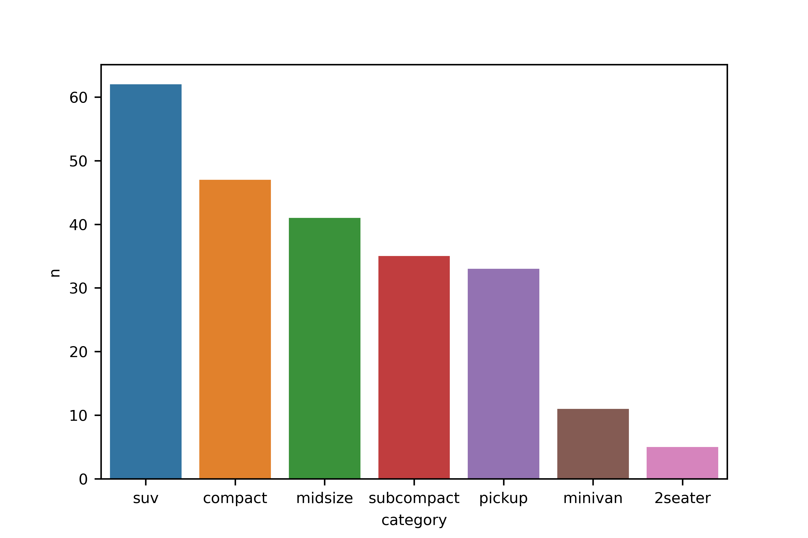
08-4 선 그래프
- 시간에 따라 달라지는 데이터 표현하기
선 그래프(line chart): 데이터를 선으로 표현한 그래프
- 시간에 따라 달라지는 데이터를 표현할 때 사용
- ex) 환율, 주가지수 등 경제지표가 시간에 따라 변하는 양상
- 시계열 데이터(time series data): 일별 환율처럼, 일정 시간 간격을 두고 나열된 데이터
- 시계열 그래프(time series chart): 시계열 데이터를 선으로 표현한 그래프
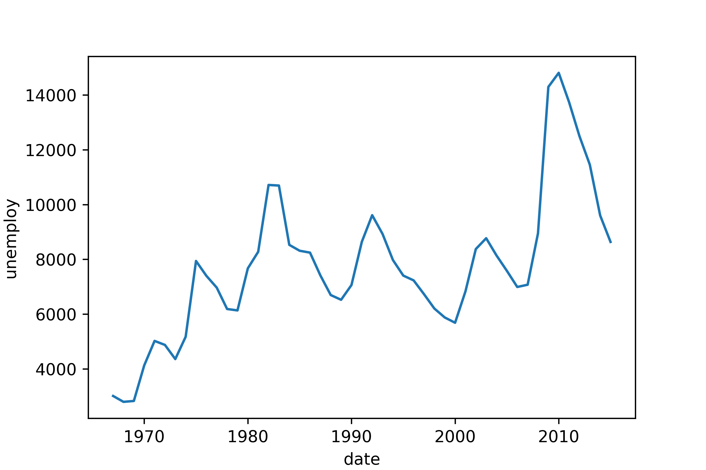
시계열 그래프 만들기
date pce pop psavert uempmed unemploy
0 1967-07-01 506.7 198712.0 12.6 4.5 2944
1 1967-08-01 509.8 198911.0 12.6 4.7 2945
2 1967-09-01 515.6 199113.0 11.9 4.6 2958
3 1967-10-01 512.2 199311.0 12.9 4.9 3143
4 1967-11-01 517.4 199498.0 12.8 4.7 3066- x축에 굵은 선이 표시되어 있음
- ‘연월일’ 을 나타낸 문자가 x축에 여러 번 겹쳐 표시되었기 때문
x축에 연도 표시하기
(1) 날짜 시간 타입 변수 만들기
# 날짜 시간 타입 변수 만들기
economics['date2'] = pd.to_datetime(economics['date'])
# 변수 타입 확인
economics.info()<class 'pandas.core.frame.DataFrame'>
RangeIndex: 574 entries, 0 to 573
Data columns (total 7 columns):
# Column Non-Null Count Dtype
--- ------ -------------- -----
0 date 574 non-null object
1 pce 574 non-null float64
2 pop 574 non-null float64
3 psavert 574 non-null float64
4 uempmed 574 non-null float64
5 unemploy 574 non-null int64
6 date2 574 non-null datetime64[ns]
dtypes: datetime64[ns](1), float64(4), int64(1), object(1)
memory usage: 31.5+ KB date date2
0 1967-07-01 1967-07-01
1 1967-08-01 1967-08-01
2 1967-09-01 1967-09-01
3 1967-10-01 1967-10-01
4 1967-11-01 1967-11-01
.. ... ...
569 2014-12-01 2014-12-01
570 2015-01-01 2015-01-01
571 2015-02-01 2015-02-01
572 2015-03-01 2015-03-01
573 2015-04-01 2015-04-01(2) 연도 변수 만들기
date pce pop psavert uempmed unemploy date2 year
0 1967-07-01 506.7 198712.0 12.6 4.5 2944 1967-07-01 1967
1 1967-08-01 509.8 198911.0 12.6 4.7 2945 1967-08-01 1967
2 1967-09-01 515.6 199113.0 11.9 4.6 2958 1967-09-01 1967
3 1967-10-01 512.2 199311.0 12.9 4.9 3143 1967-10-01 1967
4 1967-11-01 517.4 199498.0 12.8 4.7 3066 1967-11-01 1967(3) x축에 연도 표시하기
(3) x축에 연도 표시하기
혼자서 해보기
mpg 데이터를 이용해 분석 문제를 해결해 보세요.
Q1. psavert(개인 저축률)가 시간에 따라 어떻게 변해 왔는지 알아보려고 합니다.
연도별 개인 저축률의 변화를 나타낸 시계열 그래프를 만들어 보세요.
Q2. 2014년 월별 psavert의 변화를 나타낸 시계열 그래프를 만들어 보세요.
Q1. psavert(개인 저축률)가 시간에 따라 어떻게 변해 왔는지 알아보려고 합니다.
연도별 개인 저축률의 변화를 나타낸 시계열 그래프를 만들어 보세요.
Q1. psavert(개인 저축률)가 시간에 따라 어떻게 변해 왔는지 알아보려고 합니다.
연도별 개인 저축률의 변화를 나타낸 시계열 그래프를 만들어 보세요.
Q2. 2014년 월별 psavert의 변화를 나타낸 시계열 그래프를 만들어 보세요.
08-5 상자 그림
- 집단 간 분포 차이 표현하기
상자 그림(box plot) : 데이터의 분포 또는 퍼져 있는 형태를 직사각형 상자 모양으로 표현한 그래프
- 데이터가 어떻게 분포하고 있는지 알 수 있다
- 평균값만 볼 때보다 데이터의 특징을 더 자세히 이해할 수 있댜

상자 그림 만들기

상자 그림 만들기
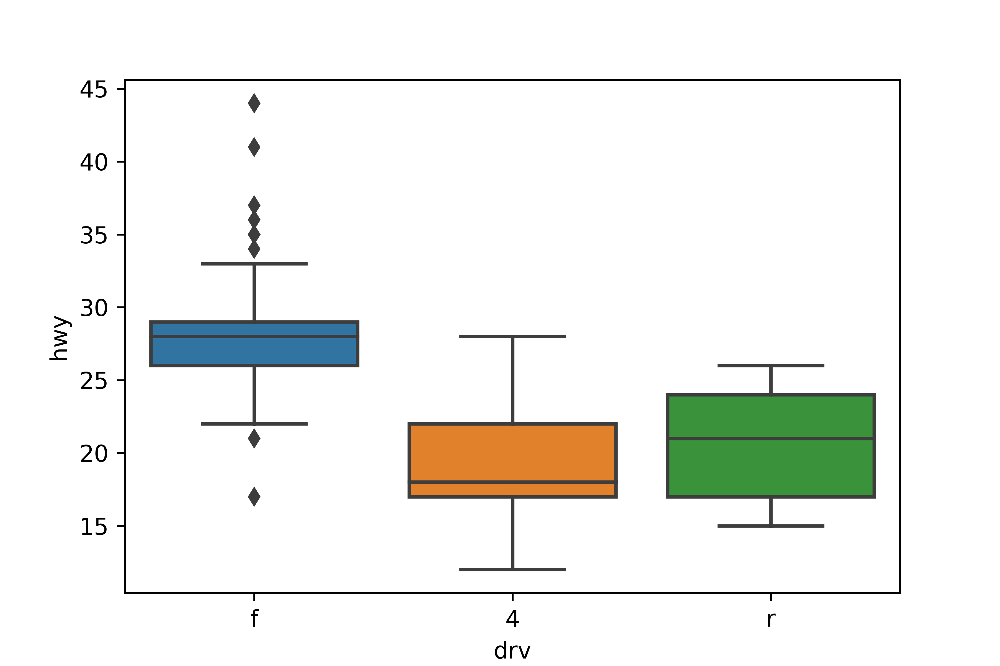
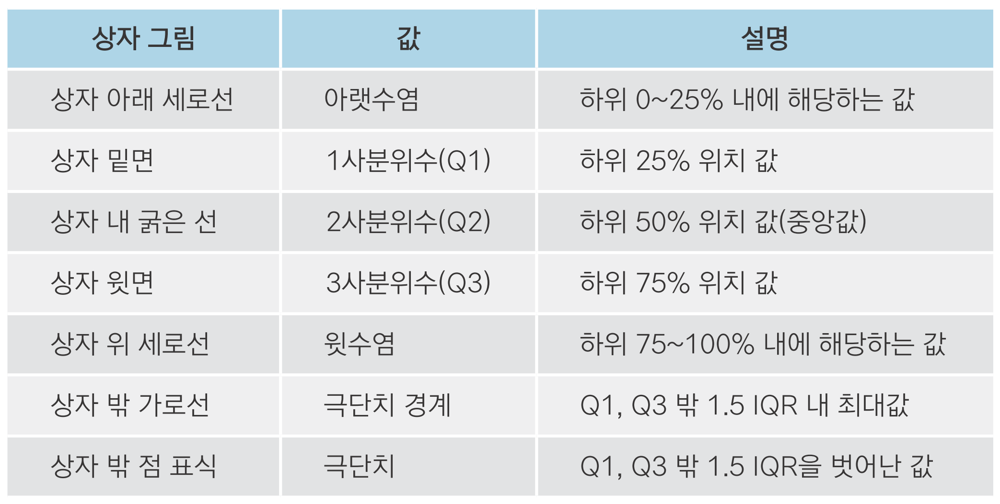
• IQR(사분위 범위): 1사분위수와 3사분위수의 거리
상자 그림 만들기

- 전륜구동(f)
- 26~29 사이의 좁은 범위에 자동차가 모여 있는 뾰족한 형태의 분포
- 수염의 위아래에 점 표식이 있으므로 연비가
극단적으로 높거나 낮은 자동차들이 있다
- 4륜구동(4)
- 17~22 사이에 자동차 대부분이 모여 있다
- 중앙값이 상자 밑면에 가까우므로 낮은 값 쪽으로 치우친 형태의 분포
- 후륜구동(r)
- 17~24 사이의 넓은 범위에 자동차가 분포한다
- 수염이 짧고 극단치가 없으므로 자동차 대부분이 사분위 범위에 해당
혼자서 해보기
mpg 데이터를 이용해 분석 문제를 해결해 보세요.
Q1. category(자동차 종류)가 'compact', 'subcompact', 'suv'인 자동차의 cty(도시 연비)가
어떻게 다른지 비교해 보려고 합니다. 세 차종의 cty를 나타낸 상자 그림을 만들어 보세요.
Q1. category(자동차 종류)가 'compact', 'subcompact', 'suv'인 자동차의 cty(도시 연비)가
어떻게 다른지 비교해 보려고 합니다. 세 차종의 cty를 나타낸 상자 그림을 만들어 보세요.
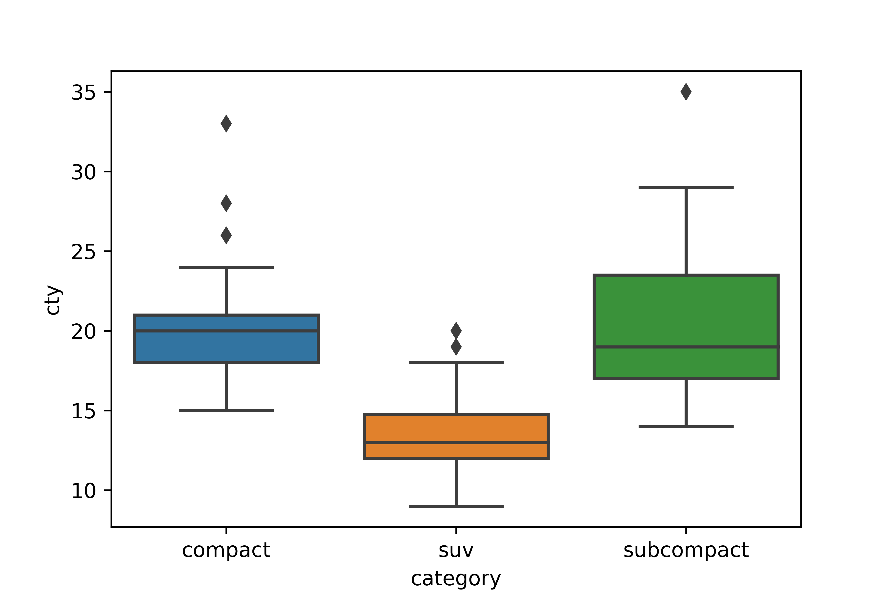
seaborn 더 알아보기
seaborn 치트 시트 • DataCamp seaborn cheat sheet: bit.ly/easypy_86
seaborn으로 만든 다양한 그래프와 코드들 • seaborn Example gallery: bit.ly/easypy_87 • The Python Graph Gallery - Seaborn: bit.ly/easypy_seaborn
matplotlib 패키지 함께 사용하기 • matplotlib 공식 문서: matplotlib.org
정리하기
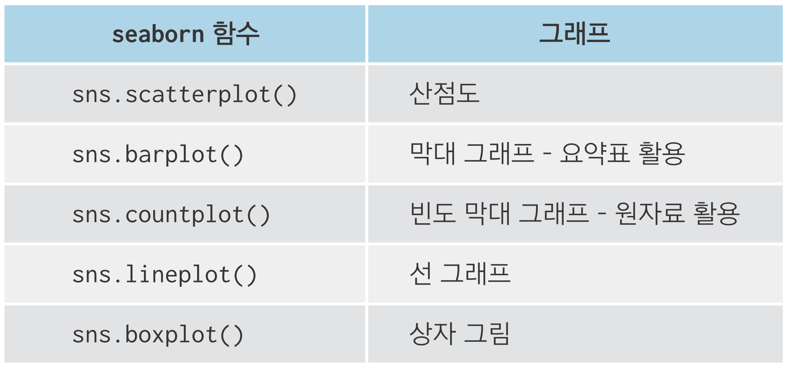
### 1. 산점도
sns.scatterplot(data = mpg, x = 'displ', y = 'hwy')
# 축 제한
sns.scatterplot(data = mpg, x = 'displ', y = 'hwy') \
.set(xlim = [3, 6], ylim = [10, 30])
# 종류별로 표식 색깔 바꾸기
sns.scatterplot(data = mpg, x = 'displ', y = 'hwy', hue = 'drv')
### 2. 막대 그래프
## 평균 막대 그래프
# 1단계. 평균표 만들기
df_mpg = mpg.groupby('drv', as_index = False) \
.agg(mean_hwy = ('hwy', 'mean'))
# 2단계. 그래프 만들기
sns.barplot(data = df_mpg, x = 'drv', y = 'mean_hwy')
## 빈도 막대 그래프
sns.countplot(data = mpg, x = 'drv')